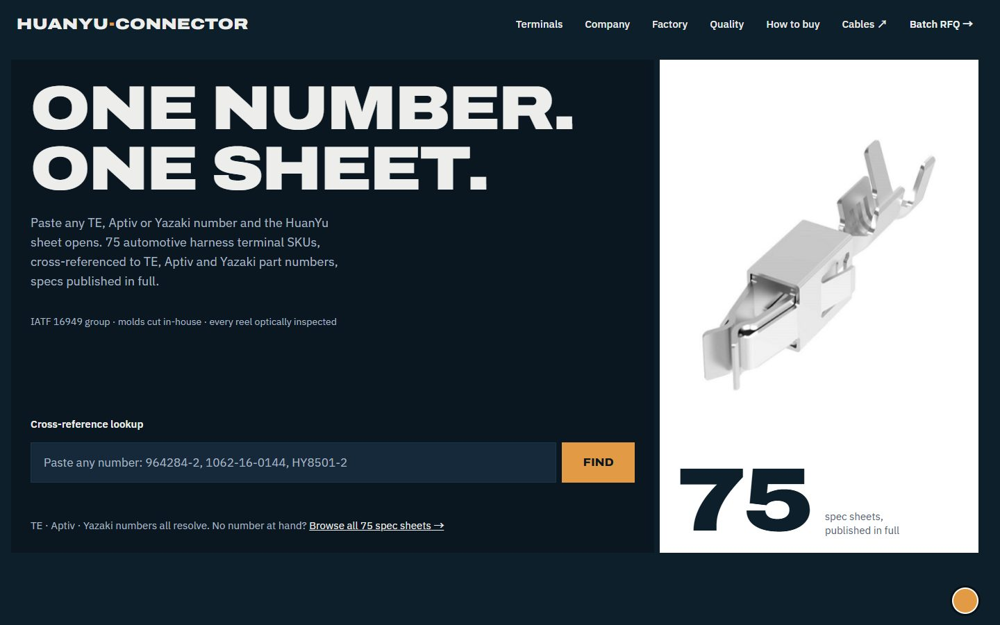
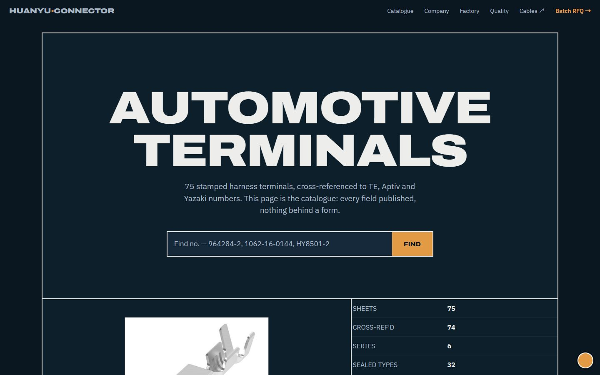
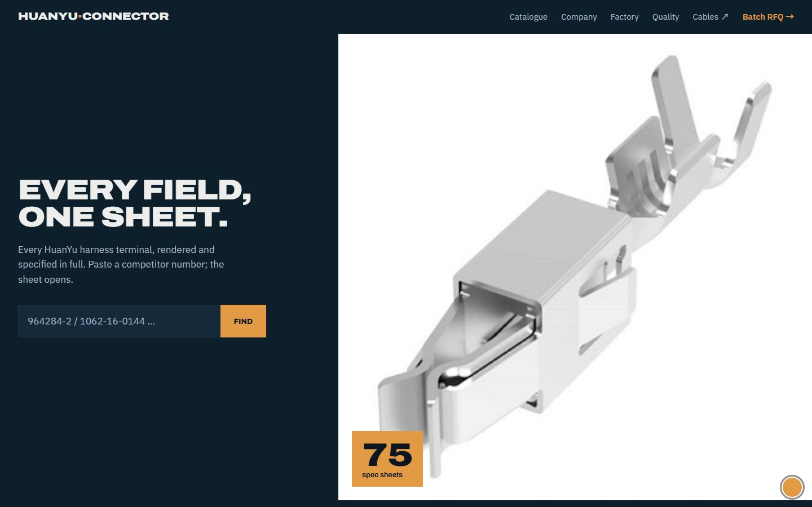
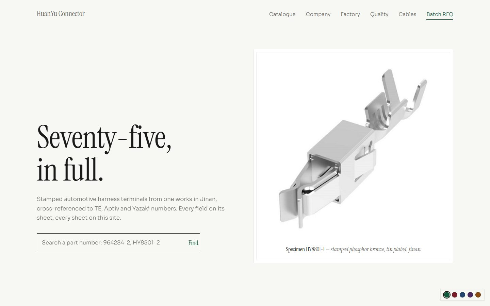

Prototype review
— four directions.
评审技能：design-taste-frontend（tasteskill v2）。两道关卡：① inspect.mjs 真浏览器门禁（1440 / 768 / 390 三宽度实测：FAIL 必须清零）＋ ② Look 评审（视觉模型按 Awwwards 评审人 rubric 打分）。日期：2026-11-06。
① 门禁结果（gate）
WARN 均为不阻断项：无视频素材（no-footage，B2B 目录站可豁免，待朋友提供产线视频）、型级尺度提示、滚动间隙提示等。全部明细存 .taste-skill/insp-{A,B,C,D}/report.json。
② 评审人打分（juror）
| 原型 | Design 40% | Usability 30% | Creativity 20% | Content 10% | Overall |
|---|
| A · Loud flat poster | 8 | 8 | 7 | 9 | 7.9 |
| B · The datasheet | 8 | 7 | 8 | 7 | 7.6 |
| C · The object, large | 8 | 8 | 7 | 7 | 7.7 |
| D · Gallery wall | 8 | 8 | 7 | 8 | 7.8 |
校准线：真实 Site of the Day 落在 7.5–8.0。四方向全部进入该区间，差异在定位而不在质量。
A · Loud flat poster 7.9五秒测试满分通过；交叉号检索的 live thing 最强；内容具体度最高（9 分）。评审意见：导航 7 项略稀释焦点、高桌面屏首屏看不到检索框。适合：获客主站。
B · The datasheet 7.6「页面即图纸」概念与端子主题最贴（创意 8）；标题栏统计表是竞品没有的形态。评审意见：图纸概念承诺「目录即本页」但首屏未证明。适合：工程师深度阅读入口 / PDF 规格书网页化。
C · The object, large 7.7巨物裁屏的电影感最强；sticky 分栏浏览效率高。评审意见：巨物手法属已知套路（创意 7）。适合：单系列落地页 / 展会屏。
D · Gallery wall 7.8纸地反转与同行全黑站差异最大；placeholder 用真实料号是「文案做 UX」（内容 8）。评审意见：首屏左上象限偏空、标题贴输入框略紧。适合：高端单页 / 品牌册数字化。
本轮新增内容（四变体齐备）
- 功能菜单：Catalogue / Company / Factory / Quality / Cables ↗ / Batch RFQ —— A 顶栏 + B 图纸外导航 + C/D 顶栏，手机端保 Company+RFQ。
- 公司介绍：两公司一园区（连接器 2016 + 线缆 1993）+ 事实瓦片（30,000 m² / 400+ 人 / ¥609M / 专利 30/28）+ 集团产品三条（PVC 电线 / 线束 / EV 充电枪，简介册原图）。
- 工厂实景：CNC 电火花线切割机车間 / 注塑模具分型面 / 园区办公楼（简介册原图，注明 2021 版来源、新摄影在筹）。
- 资质证书：IATF 16949 No. 0543831 扫描件 + 证书事实表（主体=集团线缆公司、范围=PVC 低压线、有效期 2027-09-08）+ 四条质量要点。ISO 14001/45001 两证 2026-11-19 到期，未上图（换证扫描件到位后再上）。
- 配色主题：每页右下角圆点展开切换 —— 深色系 6 款（Copper/Signal/Teal/Oxblood/Cobalt/Verdigris）× 纸色系 6 款（Stone/Sand/Mist/Rose/Haze/Cream），选择按页记忆。
CopperSignalTealOxbloodCobaltVerdigris
StoneSandMistRoseHazeCream
本轮修掉的真问题（评审抓出）
- 首页 hero 图线上 404（根绝对路径未走 BASE_URL）—— 门禁 broken-image 抓出，已修；本轮部署一并修复线上。
- 工厂图编号映射错位：并行视觉调用的返回与调用顺序不对应，首轮分类有 4 张张冠李戴（奖牌当模具、片尾页当充电枪…）。全部 6 张在用图逐一单独锚定复核后改正：工厂=p13/p20/p03，集团产品=p17/p18/p19。教训已记：批量图像分类必须逐张锚定。
- 配色条压字：固定右下悬浮条在滚动中覆盖正文（视觉评审发现）→ 收成 38px 折叠圆点、点击展开；手机端改为页尾静态。
- B 手机端横向溢出 14px：系列索引表最小内容宽 404px —— 表格手机端紧凑化 + 标题 vw 钳制。
- hairline×3 组：质量要点列表的细分隔线（反装饰线规则）→ 改色块瓦片。
- 证书卡过大（白卡主导版面）→ 收窄 420px 居中。
截图存档（终版 desktop fold）

A · Loud flat poster1440px 首屏

B · The datasheet1440px 首屏

C · The object, large1440px 首屏

D · Gallery wall1440px 首屏
待朋友拍板 / 待素材
- 四选一（或组合：如 A 主站 + D 做品牌页）＋ 配色定稿。
- ISO 14001 / 45001 两证 11-19 到期：换证扫描件到位后补证书墙。
- 连接器主体自己的证书（目录册宣称 IATF/CCC/UL）：扫描件未见，需提供。
- 工厂摄影升级：现用 2021 简介册图（已注明来源）；建议补拍高清产线照（冲压/电镀/视觉检测各一张）。
- 客户名授权：Tesla/Siemens 等名字上线前需书面授权（现用 "global OEMs, names on request"）。
- 产线视频一条（门禁 no-footage 项的最优解）。
← 返回四方向对比页